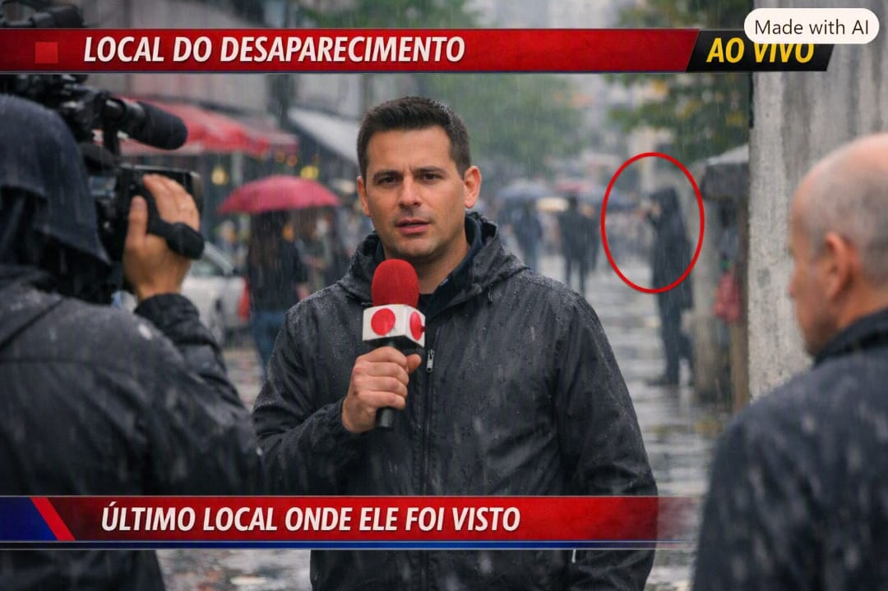

depois de dias das pessoas se perguntando e enlounquecendo oque aconteceu com o ademar a imprensa por conta própria decide procurar pelo ademar com a ajuda de uma equipe de investigação que eles contrataram e fazendo perguntas para os amigos de ademar e indo em lugares que ele costumava ir e no emprego dele conseguiram desco- brir o último lugar que eles esteve e partiram de lá para conseguir achar o ademar perguntando para quem estala ali perto no dia eles falaram que ouviram algo mas acharam que era o barulho normal da paisagem.
A equipe de investiguação retorna para a imprensa local com uma póssivel história do que aconteceu com o ademar por ainda não ter encontrado o ademar pois o lugar era um lago que é usado para lixo nuclear de uma usina se tinha um pouco de medo de se chegar lá perto por causa disso esse lugar e fechado ao público e só para pessoas espécificas ou que trabalham na usina podem ficar um pouco mais perto de lá e como a equipe de investigação não tinha nada disso acabaram que não poderam entrar lá para ter todas as informações logo eles não conseguiram terminar a investigação à fundo e depois foi passado na televisão oque aconteceu com o ademar e de acordo com a cor dos olhos dele #ou seja do tempo quando se está ensolarado ele tem habilidade de telecinese e teletransporte, quando se está nublado ele ter poderes de cura, e quando se está chavendo ele tem poder de criar hologramas
e então como no dia que foi feito a reportagem dele estava chovendo e como ademar ainda não sabia controlar muito bem seus poderes foi póssivel ver ele no fundo ou melhor um holograma que ele fez sem querer bem rapidamente e muitas pessoas mencionaram isso e uma homem que estava assistindo percebeu isso mas ele também sentiu que tinha mais coisa sobre o ademar ele sentiu atráves da televisão e por causa disso ele foi atrás de entender e com a habilidade dele de conseguir ver as linhas temporais ele conseguiu descobrir oque aconteceu com o ademar e então ele descobriu o que aconteceu com o ademar e também usando sua habilidade ele soube de todos os poderes de ademar e decidiu que ele queria pra ele principalmente enquanto o ademar ainda não sabia utilizar eles então ele começou a procurar usando alguns contatos e poderes dele entre eles são poderes de fogo e um que seria tipo parasita que ele acha que tá no controle dando alguns poderes e então ele vai atrás de ademar tentar roubar os poderes dele ele acha que vai ser muito fácil derrotar ademar e sem nenhuma conversa ele vai pra matar o ademar por sorte o ademar tem várias habilidades humanas superior a qualquer ser humano normal conseguindo sentir ele chegando antes dele atacar ele e então ele se esquiva e ele fica impressionada mas não fica com medo e con- e continua indo pra cima dele o ademar não sabe o motivo mas como ele já chegou indo pra cima ele ficou esquivando até que começou a chover fazendo ele conseguindo fazer hologramas porém não adianta muito pois ele não sabe fazer muito bem ainda os hologramas e ele nao troca de lugar com os hologramas fica fácil descobrir qual é o verdadeiro só que o ademar pensa que se conseguir perde por 5 segundos ele já vai ter um pouco de vantagem por cima então o ademar pensa em como perder de visão por 5 segundos e pensa em uma floresta então ele corre pra uma floresta e decide ir pra tipo a cpoda das árvores com o poder de fogo ficou fácil pra queimar mui- tas árvores só que o ademar conseguiu sim o tempo suficiente pra se esconder sem que o vilão notasse e ele viu 2 ademar um correndo e 1 parado ele foi atrás do que tava correndo que era o holograma pq tava ficando ensolarado e o holograma sumiu e então adermar teletransportou e pensou como que ele vai fazer pra sumir e então ele lembrou que ele tinha alguns minérios da usina e decidiu misturar com o tecido pra tentar bloquear a visão dele para não ser achado tipo uma roupa de héroi.

Clique aqui para ir ao próximo capitulo